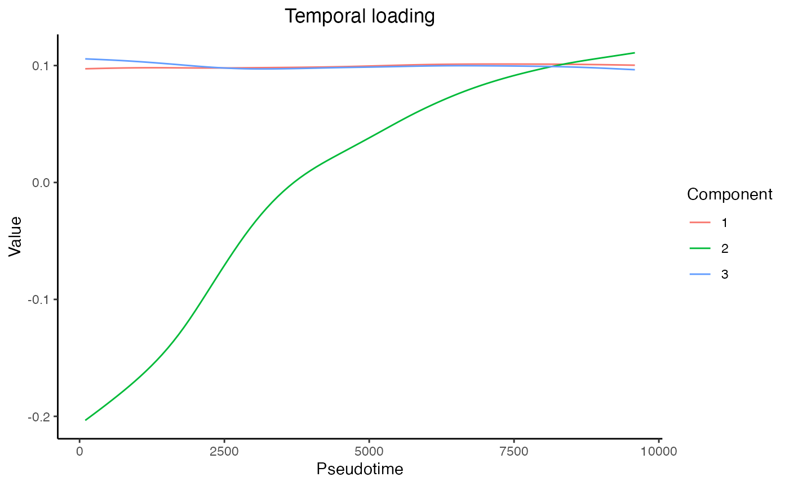
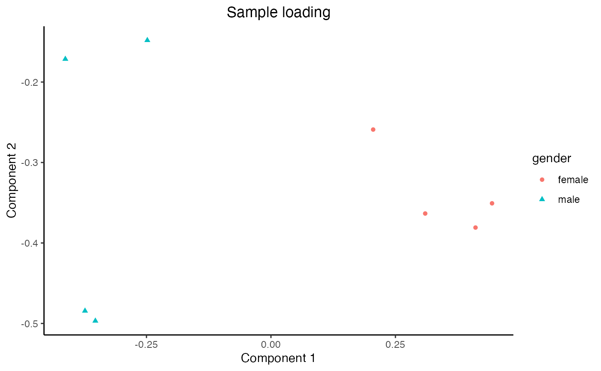
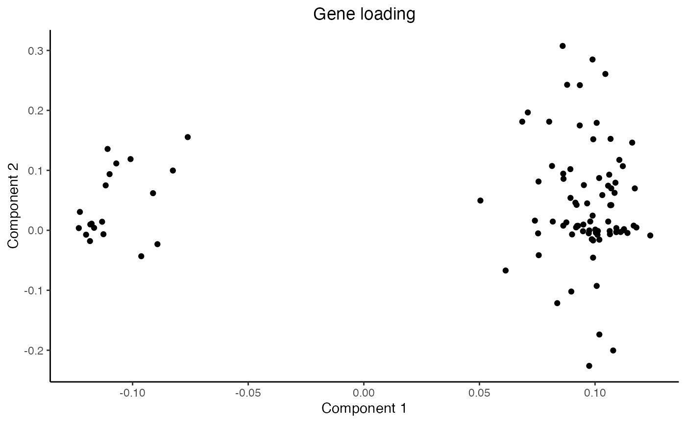

Introduction
We will demonstrate how to use MUSTARD to perform trajectory-guided dimension reduction for multi-sample single-cell RNA-seq data.
The bone marrow scRNA-seq dataset sequenced in 10x Genomics platform from 8 healthy donors was downloaded from the Human Cell Atlas (HCA) data portal. As an illustration, normalization has been performed, and selected genes are retained.
Load packages and datasets
library(MUSTARD)
expr <- readRDS(system.file("extdata", "expr.rds", package = "MUSTARD"))
pseudotime <- readRDS(system.file("extdata", "pseudotime.rds", package = "MUSTARD"))
cellanno <- readRDS(system.file("extdata", "cellanno.rds", package = "MUSTARD"))
str(expr)
#> num [1:100, 1:9683] 0.0936 0.3068 0.0384 0.3973 0.0868 ...
#> - attr(*, "dimnames")=List of 2
#> ..$ : chr [1:100] "ZFY" "KDM5D" "USP9Y" "UTY" ...
#> ..$ : chr [1:9683] "BM2:217358" "BM4:5693" "BM4:98290" "BM5:237878" ...
str(pseudotime)
#> Named int [1:9683] 1 2 3 4 5 6 7 8 9 10 ...
#> - attr(*, "names")= chr [1:9683] "BM2:217358" "BM4:5693" "BM4:98290" "BM5:237878" ...
str(cellanno)
#> Named chr [1:9683] "BM2" "BM4" "BM4" "BM5" "BM7" "BM6" "BM5" "BM1" "BM4" ...
#> - attr(*, "names")= chr [1:9683] "BM2:217358" "BM4:5693" "BM4:98290" "BM5:237878" ...Cell binning
Cell binning (50 bins by default) is performed to mitigate the sparsity of the original data.
binRes <- bin_cells(expr = expr, pseudotime = pseudotime, cellanno = cellanno)
str(binRes$expr)
#> num [1:100, 1:398] 0.0936 0.1336 0.0398 0.1725 0.0868 ...
#> - attr(*, "dimnames")=List of 2
#> ..$ : chr [1:100] "ZFY" "KDM5D" "USP9Y" "UTY" ...
#> ..$ : chr [1:398] "BM2:97.82" "BM2:291.46" "BM2:485.1" "BM2:678.74" ...
str(binRes$pseudotime)
#> Named num [1:398] 97.8 291.5 485.1 678.7 872.4 ...
#> - attr(*, "names")= chr [1:398] "BM2:97.82" "BM2:291.46" "BM2:485.1" "BM2:678.74" ...
str(binRes$cellanno)
#> Named chr [1:398] "BM2" "BM2" "BM2" "BM2" "BM2" "BM2" "BM2" "BM2" "BM2" ...
#> - attr(*, "names")= chr [1:398] "BM2:97.82" "BM2:291.46" "BM2:485.1" "BM2:678.74" ...Gene scaling
Feature selection is not performed in this example. In practice, users can select highly variable genes (HVGs) or genes of interest to highlight the biological signal, similar to standard single-cell analysis. The genes are then standardized to have zero mean and unit variance.
expr_sc <- scale_genes(expr = binRes$expr)
str(expr_sc)
#> num [1:100, 1:398] 0.415 0.909 0.492 0.391 1.157 ...
#> - attr(*, "dimnames")=List of 2
#> ..$ : chr [1:100] "ZFY" "KDM5D" "USP9Y" "UTY" ...
#> ..$ : chr [1:398] "BM2:97.82" "BM2:291.46" "BM2:485.1" "BM2:678.74" ...Run MUSTARD
mustardRes <- mustard(expr = expr_sc, pseudotime = binRes$pseudotime, cellanno = binRes$cellanno)
#> [1] "Calculate the 1th Component"
#> [1] "Convergence reached at dif=8.279816644893e-06, iter=5"
#> [1] "Calculate the 2th Component"
#> [1] "Convergence reached at dif=6.94435616459618e-05, iter=8"
#> [1] "Calculate the 3th Component"
#> [1] "Convergence reached at dif=6.0445328315268e-05, iter=10"
str(mustardRes)
#> List of 7
#> $ A.hat : num [1:8, 1:3] -0.373 -0.248 -0.353 0.31 0.411 ...
#> ..- attr(*, "dimnames")=List of 2
#> .. ..$ : chr [1:8] "BM2" "BM4" "BM5" "BM7" ...
#> .. ..$ : chr [1:3] "Component1" "Component2" "Component3"
#> $ B.hat : num [1:100, 1:3] -0.118 -0.123 -0.112 -0.118 -0.111 ...
#> ..- attr(*, "dimnames")=List of 2
#> .. ..$ : chr [1:100] "ZFY" "KDM5D" "USP9Y" "UTY" ...
#> .. ..$ : chr [1:3] "Component1" "Component2" "Component3"
#> $ Phi.hat : num [1:101, 1:3] 0.0972 0.0973 0.0975 0.0976 0.0977 ...
#> ..- attr(*, "dimnames")=List of 2
#> .. ..$ : NULL
#> .. ..$ : chr [1:3] "Component1" "Component2" "Component3"
#> $ time : num [1:101] 97.8 192.7 287.6 382.5 477.4 ...
#> $ Lambda : num [1:3] 223.9 38.6 79.6
#> $ r.square : num [1:3] 0.6319 0.0514 0.2288
#> $ accum.r.square: num [1:3] 0.632 0.651 0.731Visualize loadings
Finally, we can load the sample-level metadata and observe that Component 1 captures the gender difference among the samples, and Component 2 captures the monotone trend of genes along the trajectory.
library(ggplot2)
meta <- readRDS(system.file("extdata", "meta.rds", package = "MUSTARD"))
str(meta)
#> 'data.frame': 8 obs. of 4 variables:
#> $ intercept : num 1 1 1 1 1 1 1 1
#> $ gender : chr "male" "male" "male" "female" ...
#> $ age : chr "50" "29" "29" "36" ...
#> $ Sample_name: chr "BM2" "BM4" "BM5" "BM7" ...
plot_temporal_loading(res = mustardRes)
plot_sample_loading(res = mustardRes, meta = meta, group = "gender")
plot_gene_loading(res = mustardRes)
Session Info
sessionInfo()
#> R version 4.4.1 (2024-06-14)
#> Platform: aarch64-apple-darwin20
#> Running under: macOS Sonoma 14.6
#>
#> Matrix products: default
#> BLAS: /Library/Frameworks/R.framework/Versions/4.4-arm64/Resources/lib/libRblas.0.dylib
#> LAPACK: /Library/Frameworks/R.framework/Versions/4.4-arm64/Resources/lib/libRlapack.dylib; LAPACK version 3.12.0
#>
#> locale:
#> [1] en_US.UTF-8/en_US.UTF-8/en_US.UTF-8/C/en_US.UTF-8/en_US.UTF-8
#>
#> time zone: America/New_York
#> tzcode source: internal
#>
#> attached base packages:
#> [1] stats graphics grDevices utils datasets methods base
#>
#> other attached packages:
#> [1] ggplot2_3.5.1 MUSTARD_1.0
#>
#> loaded via a namespace (and not attached):
#> [1] Matrix_1.7-0 gtable_0.3.5 jsonlite_1.8.8 highr_0.11
#> [5] compiler_4.4.1 jquerylib_0.1.4 systemfonts_1.1.0 scales_1.3.0
#> [9] textshaping_0.4.0 yaml_2.3.10 fastmap_1.2.0 lattice_0.22-6
#> [13] R6_2.5.1 labeling_0.4.3 knitr_1.48 htmlwidgets_1.6.4
#> [17] tibble_3.2.1 desc_1.4.3 munsell_0.5.1 bslib_0.8.0
#> [21] pillar_1.9.0 rlang_1.1.4 utf8_1.2.4 cachem_1.1.0
#> [25] xfun_0.47 fs_1.6.4 sass_0.4.9 cli_3.6.3
#> [29] withr_3.0.1 pkgdown_2.1.0 magrittr_2.0.3 digest_0.6.37
#> [33] grid_4.4.1 rstudioapi_0.16.0 irlba_2.3.5.1 lifecycle_1.0.4
#> [37] vctrs_0.6.5 evaluate_0.24.0 glue_1.7.0 farver_2.1.2
#> [41] ragg_1.3.2 fansi_1.0.6 colorspace_2.1-1 rmarkdown_2.28
#> [45] matrixStats_1.3.0 tools_4.4.1 pkgconfig_2.0.3 htmltools_0.5.8.1